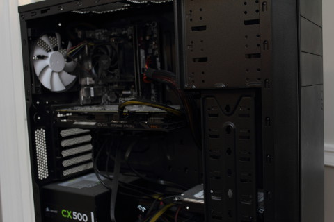

The purpose of these guides is to teach you how to preform basic maintenance tasks on
your personal computer. After reading these guides you should be able to open and
clean your computer with confidence, knowing that you accomplished these tasks
yourself instead of having a friend or relative do it, or spend time and money in
bringing your personal computer into a computer repair shop.
To use these guides, simply continue reading through the rest of the guide and
follow along with the steps as you complete the tasks (if you can have this page
open while you are working on your computer while it is unplugged,) or print this
page out and follow the steps as listed then save the guide for later use if needed.
The Basics
In this guide you will learn how to safely clean the inside of your computer case. We
recommend following our guide on how to open up you computer case if you have not
yet opened it up. If you do not feel comfortable opening up your personal computer
(voiding the warranty) then this guide does not have much to offer you.
What you will need:
A computer
A hand screwdiver
A flashlight
A can of compressed air
A camera, or paper and a pencil/pen
A slightly damp paper towel
A well-ventilated area
The ability to lift at least twenty pounds
A sense of adventure
Overview
Move Computer to Well-Ventilated Area
Discharge Static Electricity
Open Computer Case
Inspect the Inside
Remove Dust
The Procedure
Move Computer to Well-Ventilated Area
We assume that you have followed the guide to opening your
computer and know at least that much. It is important
to move your computer case to a well-ventilated area to allow the
compressed air (which is not actually air and is extremely lethal if
inhaled) to dissipate. DO NOT ATTEMPT TO INHALE THE COMPRESSED AIR!
This also helps to clear the dust from your computer case.
Discharge Static Electricity
Electrostatic discharge (ESD) is an enemy of electronics and
your computer is no exception. Don't skip this step!
Avoid frying your expensive computer by touching a metallic surface,
even the outside of your computer case will work while it is plugged
in. Your computer case offers grounding protection: it redirects
electronically harmful amounts of electricity away from the electronics
inside and into the ground (dirt.)
Open Computer Case
Remove the thumb screws at the back of your computer case along
the right side. Pop the side panel off and set it aside. Many computer
cases' side panels come free by sliding the panel toward the back of
the case then come off at an angle. Try to play around
with different methods of removing the side panel if this is not the
case, but do not try to force the side panel off.
Inspect the Inside

Look around the inside of the case for any visible signs of
damage. These include scorch marks, damaged components, and anything
else that might seem suspect to you. Recall that
electrostatic discharge is the enemy of electronics. Do not touch any
components on the inside of your computer case with you hands! Not only
can you damage the sensitive electronics with static electricity, but
you will transfer natural oil produced by your skin onto the circuit
boards and components that causes them to start to break down.
If you do see signs of damage, bring your computer into a computer
repair shop to have an expert look at it.
Remove Dust
Follow the directions on the can of compressed air for use.
DO NOT ATTEMPT TO INHALE THE COMPRESSED AIR! Remember
to not touch the components directly with your hand. If the can
starts to feel cold, set the can down and let it warm back up. After
finishing removing the dust from the inside of the computer case. Take
slightly damp paper towel (run the water over a paper towel and wring
it out thoughly,) and run it over all the exterior surfaces of the
computer case except the indented portions of the back of the case
(where all the cables plug into.) Once that is complete you are ready
to put the side panel and thumb screws back in place and get your
computer plugged in again.
The End Result
In this guide you learned how to safely clean the inside of your computer case. You
learned about the safety precautions to take when dealing with computer hardware and
how to mitigate those problems. Congratulations, you have taken the next steps toward
becoming more computer savvy and literate! Well down!
Looking to learn more about the world of computer maintenance/hardware? Check out these
links: